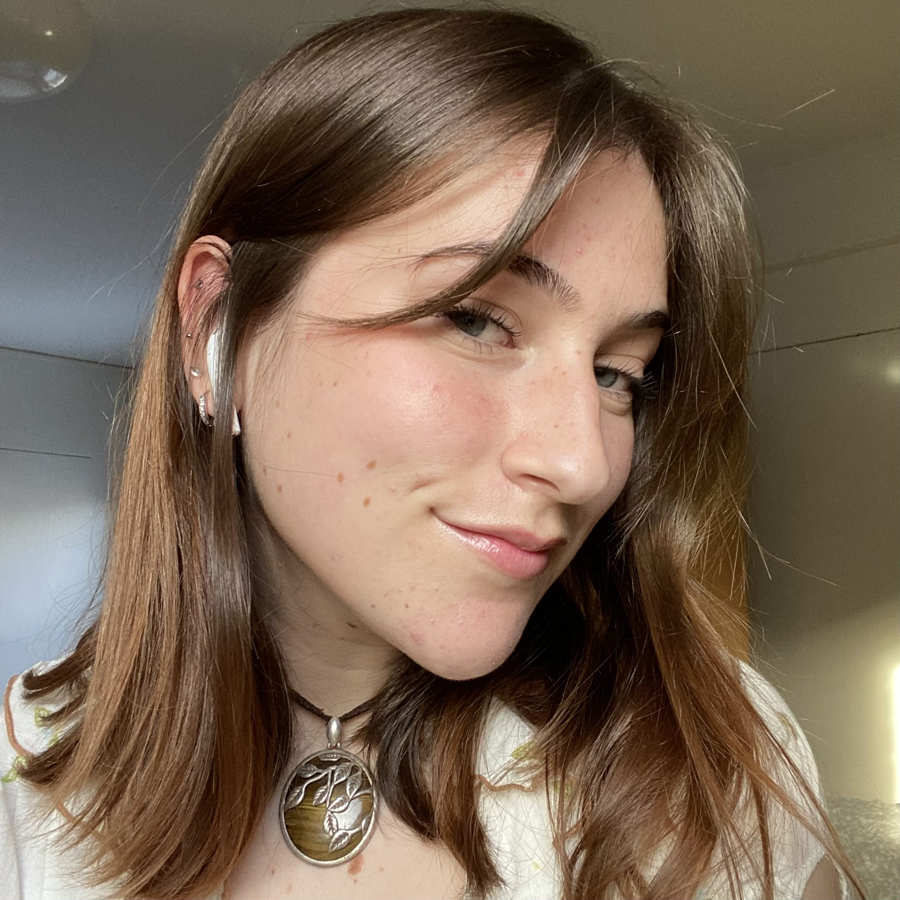
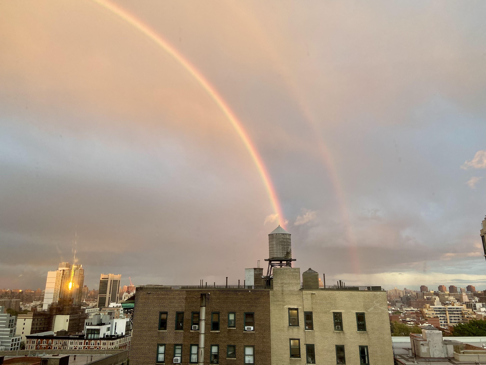
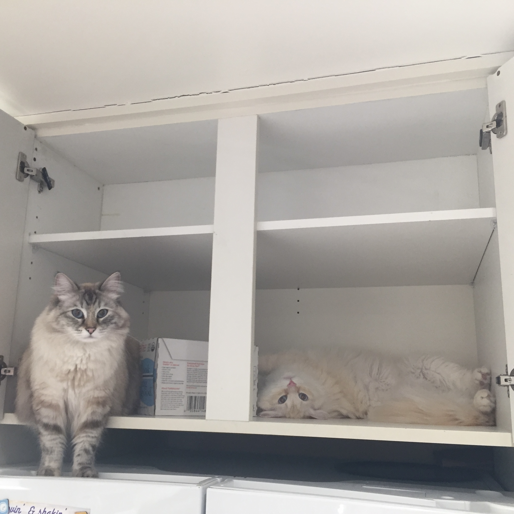
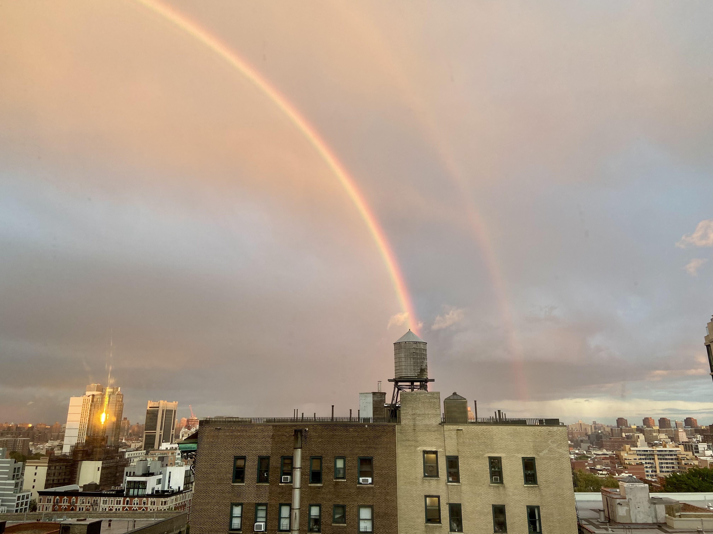
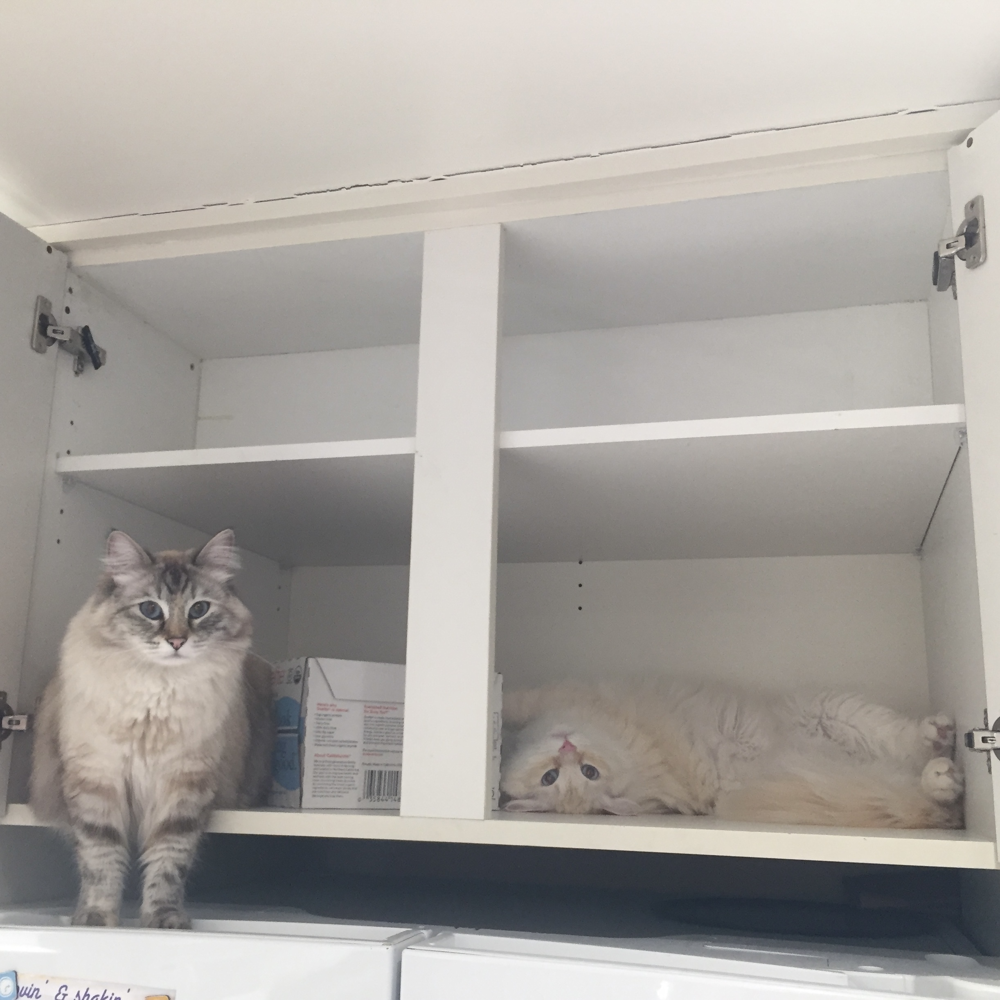

About Me ☺
I was born and raised in Chicago, Illinois! There, along with my family, I have two cats named Leo and Luna.
I am passionate about the intersection between design and accessibility in the human-computer interaction field. By accessibility, I mean anything from exploring the world of accessible user interfaces to lowering the barrier of entry to complex topics in computer science.
I work as a research assistant under Dr. Mark Santolucito in Barnard’s Programming Languages Lab. The lab specializes in program synthesis, computer music, live coding, and domain-specific languages, all of which I have dabbled in and more!
During the school year, I work as a student assistant at Barnard’s Instructional Media and Technology Services (IMATS) in the Milstein. At the front desk, I provide community members with free video production and photography equipment, tinker around on the Barnard Library website to improve it’s accessibility, and catch up with my coworkers about our newest media fixations.
In my free time, I love to tend to my plants, go to concerts, draw, bake and eat dessert, vintage shop, sit in Riverside Park, travel, and attend fashion exhibitions around the city!
 


